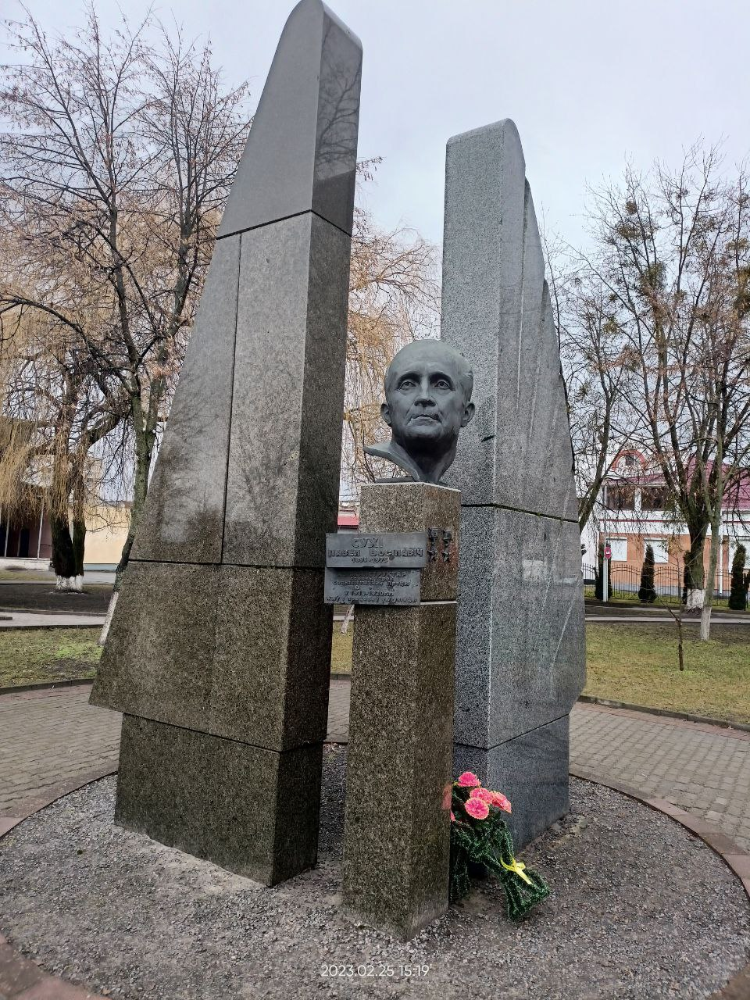

Памятник П.О. Сухому

Павел Сухой родился 22 июля 1895 года в селе Глубокое Виленской губернии (ныне город Глубокое Витебской области) в семье сельского учителя. В 1918-1920 годах работал учителем средней школы в городах Лунинец и Гомель. Павел Осипович Сухой - авиаконструктор, создатель реактивных самолетов, сверхзвуковых истребителей. Скончался авиаконструктор 15 сентября 1975 года. Похоронен на Новодевичьем кладбище в Москве.